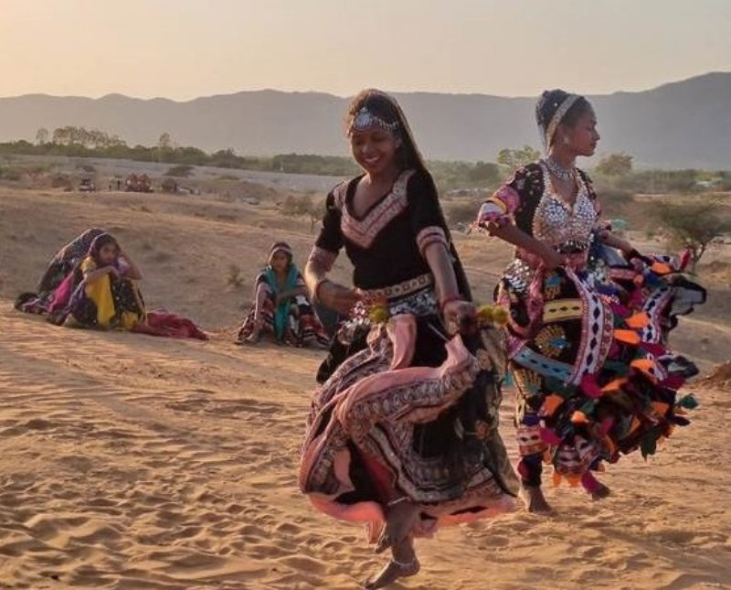
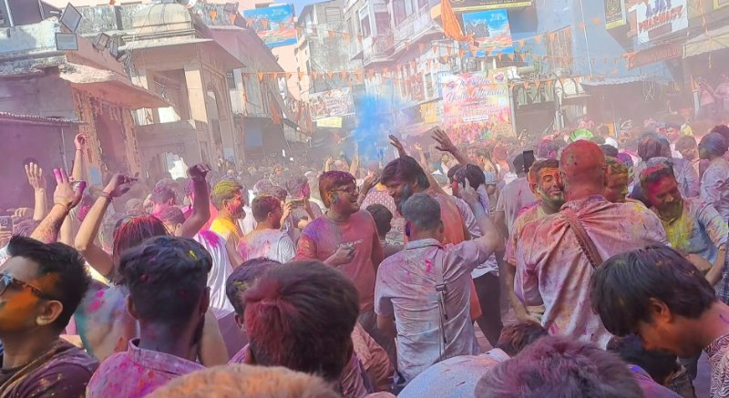
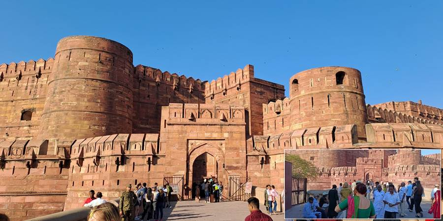

Indija je zemlja za koju sam mislila da me ništa ne može iznenaditi, a onda sam stigla tamo. Živopisna, egzotična, zanosna i potpuno drugačija od svega na šta sam navikla. Zemlja toplih osmeha, širokog srca, neverovatnih kontrasta i svakodnevnih prizora koji deluju kao da su izašli iz filma.
.jpg)
Na put u Indiju krenula sam sa drugaricama i grupom putnika. Iako smo inače volele da same organizujemo svoja putovanja, za Indiju smo ovog puta izabrale agenciju. Priznajem, nismo bile dovoljno hrabre, ili dovoljno lude, da krenemo same. Sa nama je bio i lokalni vodič Nikola, koji nam je tokom putovanja postao mnogo više od osobe koja nas vodi od jedne znamenitosti do druge.
.jpg)
Ovo nije priča samo o indijskim spomenicima i mestima koja treba videti. Ovo je moj putopis iz Indije, sa susretima, smešnim situacijama, malim iznenađenjima i trenucima zbog kojih sam se u ovu zemlju zaljubila.
.jpg)
Putovanje kroz Indiju: Nju Delhi, Puškar, Džajpur, Agra i Vrindavan
Tokom desetodnevnog putovanja obišli smo Nju Delhi, sveti grad Puškar, ružičasti Džajpur, Agru sa čuvenim Tadž Mahalom i Vrindavan, poznat po hramovima Hare Krišne.
Svako od ovih mesta ostavilo je drugačiji utisak na mene. Negde su to bile ulice pune života, negde duhovni obredi, negde raskošna arhitektura, a negde susreti sa ljudima koje nisam poznavala, ali koji su mi svojim osmehom i gostoprimstvom ulepšali dan.
Nju Delhi: prve slike Indije
Prvi susret sa Indijom počeo je u Nju Delhiju. Izmaglica, saobraćaj u kojem svi trube, tuk tukovi, bazari, šareni sariji i ljudi koji se provlače kroz svakodnevni haos. Majmuni su slobodno skakutali po ulicama, a meni je već na prvi pogled bilo jasno da sam stigla na mesto kakvo sam zamišljala.
Posebno volim da na putovanjima odvojim vreme za samostalnu šetnju. Dok su ostali čekali da se smestimo u hotel, ja sam jedva čekala da izađem i zavirim u ulice. Bez posebnog plana, samo da gledam ljude, fotografišem i upijam atmosferu.
Indija me je osvojila i hranom. Ponela sam gotovo pola kofera grickalica, plašeći se da ću ostati gladna, a onda sam se zaljubila u indijska jela i mango lassi, napitak od jogurta i manga koji me je pratio do kraja putovanja.
.jpg)
.jpg)
.jpg)
Puškar: sveto jezero, majmuni i Holi festival
Puškar je za mene bio jedna od onih stanica na putovanju na kojima poželiš da zastaneš i samo posmatraš šta se oko tebe događa.
Oko svetog jezera ljudi dolaze na obrede, prinose cveće i traže blagoslov. Na ulicama su svete krave, majmuni skakuću po kablovima, a u prodavnicama se smenjuju sariji, šarene haljine, začini, mirisni štapići i razni predmeti koje poželiš da poneseš kući.
U Puškaru smo dočekali i Holi, festival boja zbog kojeg smo i došli u ovaj deo Indije. Ulice su se ispunile ljudima, muzikom i obojenim licima. Svako ti poželi srećan Holi, namaže te bojom po obrazu, a boje lete na sve strane. Svi smo bili deo istog šarenog slavlja.
Naravno, nije sve prošlo baš onako kako smo planirale. Tu su bili i uspon do hrama sa majmunima, 920 stepenika, tuk tuk u kojem smo se jedva smestili i nekoliko situacija u kojima sam se zapitala da li sam zaista toliko hrabra koliko mislim da jesam.
A tek večernji obred uz sveto jezero, velika vatra i muzika! To su prizori koje fotografija može da sačuva, ali teško može da prenese osećaj da si zaista tamo.
.jpg)
.jpg)

.jpg)
.jpg)

Džajpur: ružičasta čarolija
Džajpur, poznat kao Pink City, osvojio me je čim sam ga ugledala. Njegova karakteristična arhitektura, lukovi, kupole i ukrašene fasade deluju potpuno drugačije od onoga što sam do tada videla.
Posebno mi se dopala Palata vetrova, Hawa Mahal, sa mnoštvom prozora koji podsećaju na saće. Džajpur je i mesto na kojem sam uživala u bazarima, indijskoj odeći i cenkanju, mada sam mnogo više volela da lutam ulicama i posmatram ljude nego da kupujem.
Jedan od mojih omiljenih trenutaka bio je zalazak sunca uz pogled na Palatu vetrova. Dok su moje drugarice nastavile sa šopingom, ja sam požurila na krovni bar da uhvatim svetlost i fotografišem prizor. Ponekad na putovanju treba poslušati sebe, čak i kada ostatak ekipe ima drugačiji plan.
.jpg)
.jpg)
.jpg)
.jpg)
Agra: susret sa Tadž Mahalom
Postoje znamenitosti koje si toliko puta video na fotografijama da pomisliš kako te stvarni susret ne može posebno iznenaditi. A onda staneš pred njih.
Tadž Mahal je bio jedan od najvažnijih trenutaka mog putovanja kroz Indiju. Znala sam šta me čeka, ali jedno je gledati fotografije, a sasvim drugo biti tamo. Poseban doživljaj bio je i ponovni susret sa ovim čuvenim spomenikom u zoru.
Upravo su takvi trenuci razlog zbog kojeg volim putovanja. Možeš da pročitaš sve o nekom mestu, pogledaš bezbroj fotografija i napraviš plan, ali tek kada stigneš tamo, shvatiš šta ono zaista znači tebi.
.jpg)
.jpg)
.jpg)

Vrindavan: hramovi Hare Krišne i živopisni bazari
Vrindavan nam je doneo još jedan drugačiji pogled na Indiju. Posetili smo hramove Hare Krišne i prošetali živopisnim bazarima, među ljudima, bojama i prizorima.
Indija nije samo niz poznatih spomenika. Njena posebnost je i u svakodnevnom životu, u ulicama kojima prolaziš, u ljudima koje srećeš i u običajima koji su ti novi i nepoznati.
.jpg)
.jpg)
Povratak u Nju Delhi
Na kraju putovanja vratili smo se u Nju Delhi, gde su nas čekali novi prizori, hram Akšardam, Čandi Čouk i živopisne gradske ulice.
Deset dana nije dovoljno da se upozna čitava Indija. Ali jeste dovoljno da shvatiš koliko je raznolika, koliko može da te iznenadi i koliko različitih uspomena možeš da poneseš sa jednog putovanja.
Moja Indija ostala je sačuvana u šarenim ulicama, osmesima, mirisima hrane, Holi bojama, majmunima koji su iskakali na mestima na kojima ih nisam očekivala i Tadž Mahalu koji sam želela da vidim još jednom.
.jpg)
.jpg)
.jpg)
.jpg)
Moje iskustvo sa putovanja u Indiju
Indija me je iznenadila ljudskošću, skromnošću i toplinom koju sam dobijala od ljudi. Naravno, putovali smo u grupi, uz lokalnog vodiča i pratnju, što je uticalo na to kako sam doživela zemlju. Ne mogu da tvrdim da bih imala isto iskustvo da sam putovala sama.
Ako te privlače indijska kultura, Holi festival, šareni bazari, hramovi, istorijske znamenitosti i susreti sa drugačijim načinom života, pozivam te da pročitaš moje priče iz Indije. Ne kao spisak mesta koja moraš da obiđeš, već kao iskustvo jedne putnice koja je otišla radoznala, a vratila se sa mnogo više priča nego što je očekivala.
.jpg)
Dobro došli u moju opojnu Indiju.
Sandra
Tamo daleko